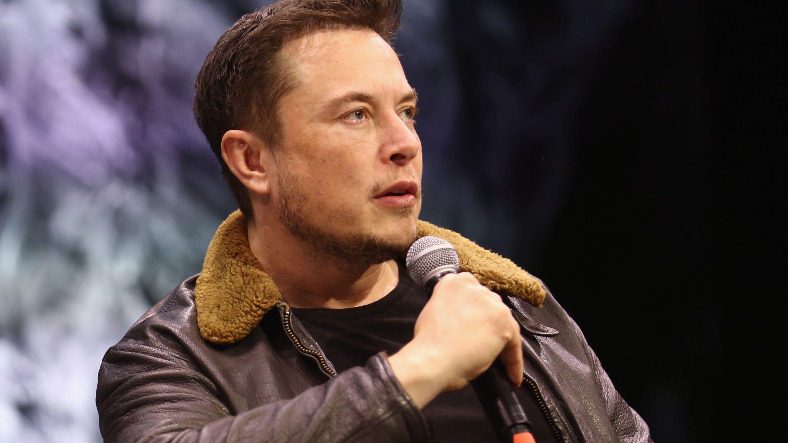
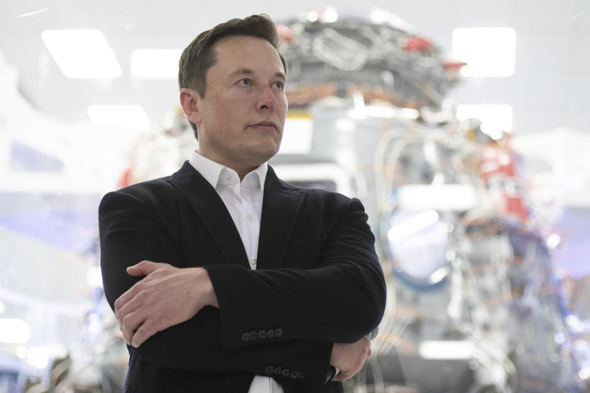
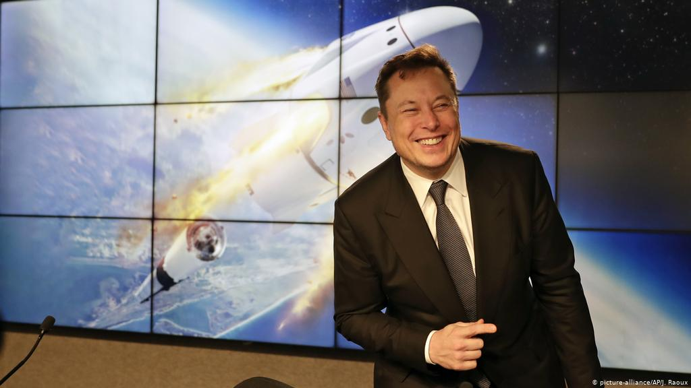
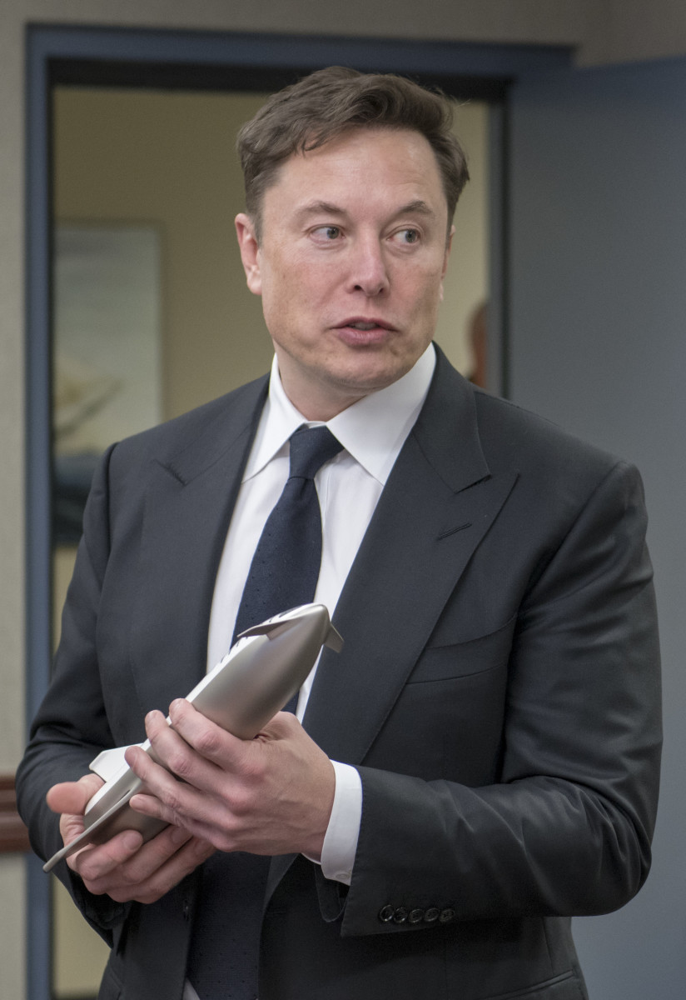
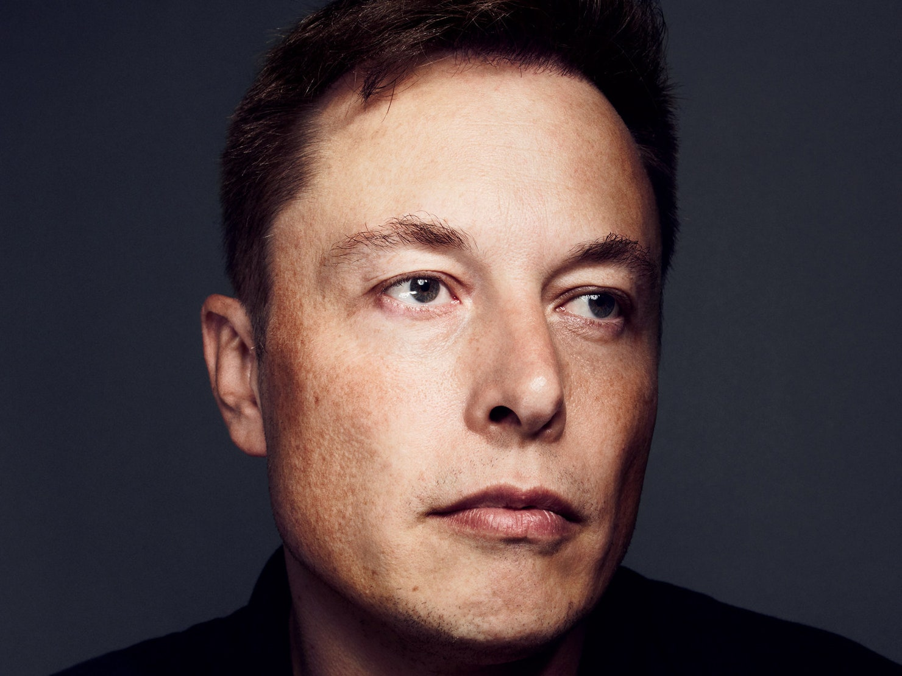
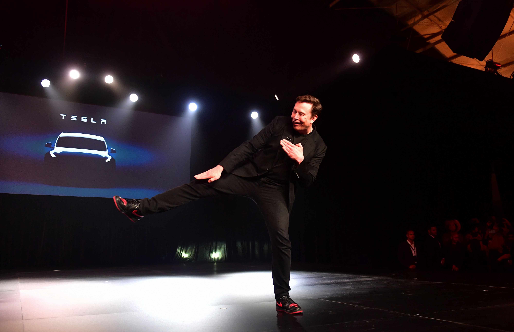
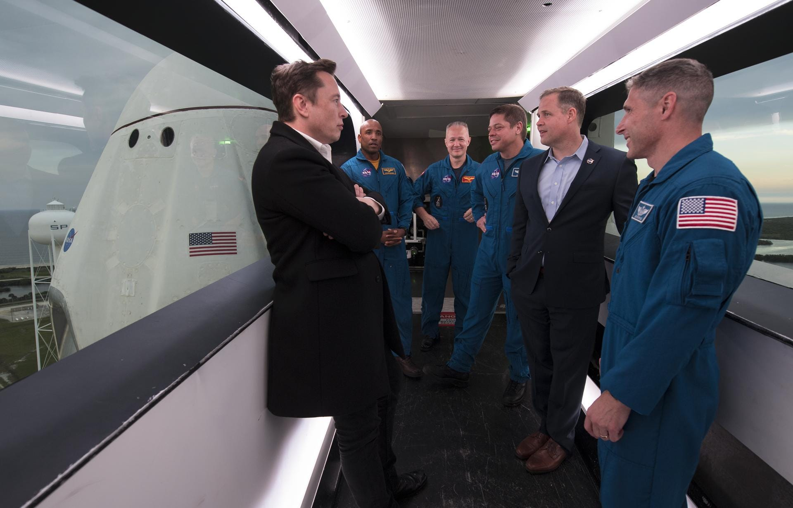
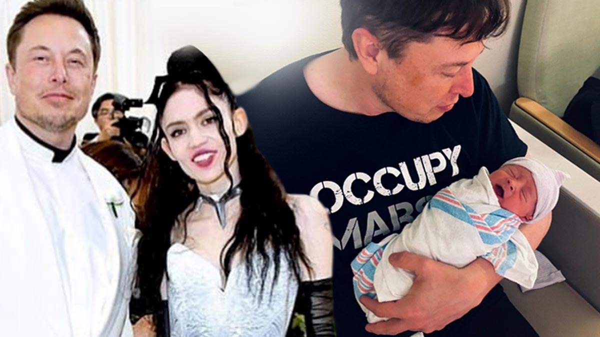

Elon Musk
The Man who never Sleep
Elon Musk is a South African-born American entrepreneur and businessman who founded X.com in 1999 (which later became PayPal), SpaceX in 2002
and Tesla Motors in 2003. Musk became a multimillionaire in his late 20s when he sold his start-up company, Zip2, to a division of Compaq Computers.
Musk made headlines in May 2012, when SpaceX launched a rocket that would send the first commercial vehicle to the International Space Station.
He bolstered his portfolio with the purchase of Solar City in 2016, and cemented his standing as a leader of industry by taking on an advisory role
in the early days of President Donald Trump's administration.
Musk was born on June 28, 1971, in Pretoria, South Africa. As a child, Musk was so lost in his daydreams about inventions that his parents and doctors
ordered a test to check his hearing.Musk’s mother, Maye Musk, is a Canadian model and the oldest woman to star in a Covergirl campaign. When Musk was
growing up, she worked five jobs at one point to support her family.Musk’s father, Errol Musk, is a wealthy South African engineer.Musk spent his early
childhood with his brother Kimbal and sister Tosca in South Africa. His parents divorced when he was 10. Please see the Table below to see Elon Musk Life tree.








Elon Musk Life Tree
| Year |
What Happened In That Time |
| 1971 |
Elon Musk was born. |
| 1980 |
Elon Musk Parents got Divorce. |
| 1982 |
Elon Musk sold his first Softwere (Blastatr) |
| 1989 |
Elon Musk Moved to Canada to attend Queens University. |
| 1992 |
Elon Musk left Canada to study business and Physics at the Univerity of Pennsylvania. |
| 1995 |
Elon Musk Lunch his first Company, Zip2 Corporation which known as Paypal now. |
| 2000 |
Elon Musk got Married with Justine Willson. |
| 2002 |
Become U.S. Citizen and founded third comppany SpaceX. |
| 2003 |
Elon Musk become ceo of Tesla Motors. |
| 2010 |
Elon Musk go married with Talulah Riley after divorce from Justine Wilson. |
| 2012 |
Elon Musk SpaceX made history when launched Falcon 9 rocket. |
| 2013 |
Elon Musk invented Hyperloop and Falcon 9 successfully carried a satellite to geosynchronous transfer orbit. |
| 2016 |
Elon Musk promting peoples for solar city. |
| 2017 |
Elon Musk acheieve space X successful test flights |
| 2018-current |
Elon Musk working hard to maintain all his company along with his great invented and family. |